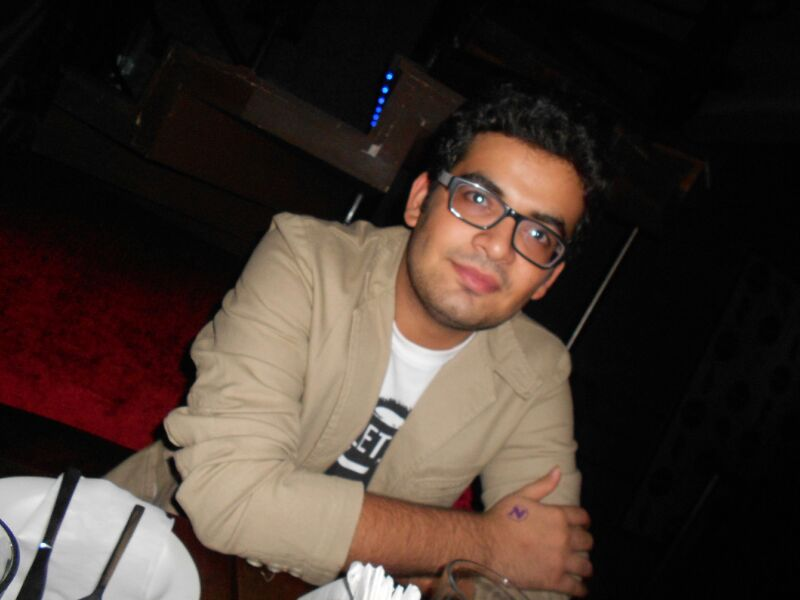

{% include social_links.html %}
Biography
For over 10 years, I've been fascinated by a single, fundamental problem: finding the needle in the haystack. I believe that search and personalization are the heart of the internet, and as our digital universe expands, the challenge of finding the right information becomes ever more critical. My journey began in the trenches of recommendation and search, back in the era of Lucene, where I built core algorithms like TF-IDF and BM25 from scratch—sometimes even in MySQL. This evolved into building personalization systems through collaborative filtering and intricate user feature engineering. From there, I pivoted into what remains the most fascinating work of my career: ADAS and Edge AI. In the pre-transformer era, I tackled the challenge of running models like SqueezeNet and MobileNet on tiny devices by mastering optimization techniques like knowledge distillation, quantization, and pruning. The later half of my career has been at Big Tech, engineering systems for immense scale and reliability across forecasting, RAG, text2code, and content moderation.
In parallel with my professional work, a keen interest in few-shot adaptation for physiological signal processing led me to pursue a Ph.D., allowing me to apply this problem-solving lens to the ultimate complex system: the human brain. If you're also passionate about representation learning, decision-making under noise, or the science behind building robust, real-world ML systems, let’s connect.
{% if site.show_social_icons %}
{% include social_links.html %}
{% endif %}
{% if site.show_affiliations %}
{% include affiliations.html %}
{% endif %}